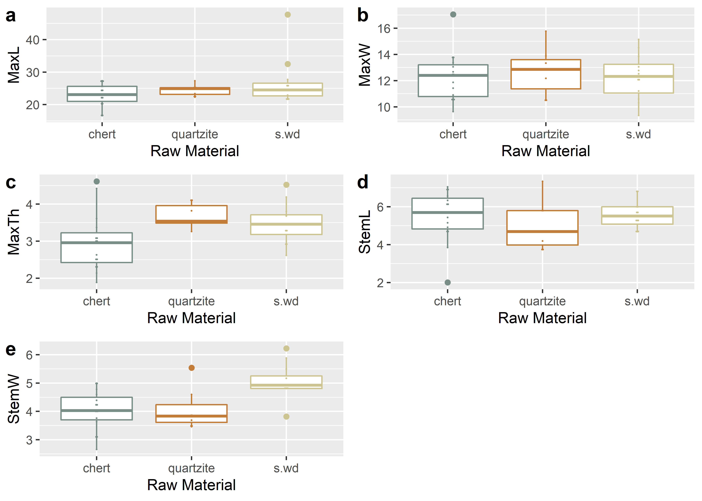
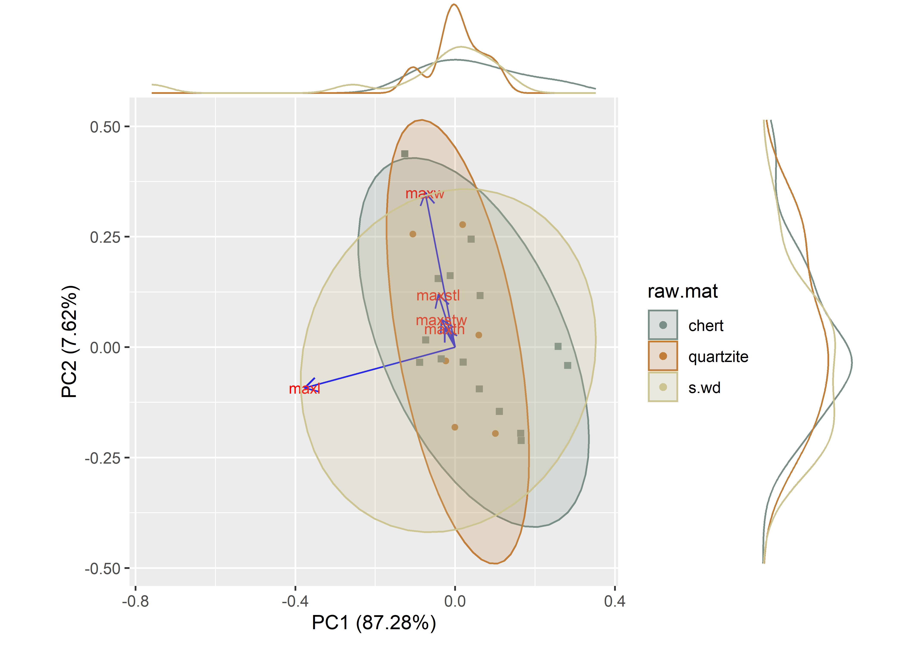

Chapter 1 Linear morphometrics
# install required analysis packages
#devtools::install_github("tidyverse/tidyverse")
#devtools::install_github("mlcollyer/RRPP")
#devtools::install_github("kassambara/ggpubr")
#devtools::install_github("sinhrks/ggfortify")
#devtools::install_github("daattali/ggExtra")
# load libraries
library(here)
library(tidyverse)
library(RRPP)
library(ggpubr)
library(ggfortify)
library(cluster)
library(wesanderson)
library(ggExtra)1.1 Read data and define variables
# read data
data <- read.csv("qdata.csv", header = TRUE, as.is=TRUE)
# define variables
maxl <- data$maxl # maximum length
maxw <- data$maxw # maximum width
maxth <- data$maxth # maximum thickness
maxstl <- data$maxstl # maximum stem length
maxstw <- data$maxstw # maximum stem width
raw.mat <- data$raw.mat # raw material1.2 Boxplots for variable by raw material
# boxplot of maximum length ~ raw.mat
raw.matmaxl <- ggplot(data, aes(x = raw.mat, y = maxl, color = raw.mat)) +
geom_boxplot() +
geom_dotplot(binaxis = 'y',stackdir = 'center',dotsize = 0.3) +
scale_colour_manual(values = wes_palette("Moonrise2")) +
theme(legend.position = "none") +
labs(x = 'Raw Material', y = 'MaxL')
# boxplot of maximum width ~ raw.mat
raw.matmaxw <- ggplot(data, aes(x = raw.mat, y = maxw, color = raw.mat)) +
geom_boxplot() +
geom_dotplot(binaxis = 'y',stackdir = 'center',dotsize = 0.3) +
scale_colour_manual(values = wes_palette("Moonrise2")) +
theme(legend.position = "none") +
labs(x = 'Raw Material', y = 'MaxW')
# boxplot of maximum thickness ~ raw.mat
raw.matmaxth <- ggplot(data, aes(x = raw.mat, y = maxth, color = raw.mat)) +
geom_boxplot() +
geom_dotplot(binaxis = 'y',stackdir = 'center',dotsize = 0.3) +
scale_colour_manual(values = wes_palette("Moonrise2")) +
theme(legend.position = "none") +
labs(x = 'Raw Material', y = 'MaxTh')
# boxplot of stem length ~ raw.mat
raw.matmaxstl <- ggplot(data, aes(x = raw.mat, y = maxstl, color = raw.mat)) +
geom_boxplot() +
geom_dotplot(binaxis = 'y',stackdir = 'center',dotsize = 0.3) +
scale_colour_manual(values = wes_palette("Moonrise2")) +
theme(legend.position = "none") +
labs(x = 'Raw Material', y = 'StemL')
# boxplot of stem width ~ raw.mat
raw.matmaxstw <- ggplot(data, aes(x = raw.mat, y = maxstw, color = raw.mat)) +
geom_boxplot() +
geom_dotplot(binaxis = 'y', stackdir = 'center', dotsize = 0.3) +
scale_colour_manual(values = wes_palette("Moonrise2")) +
theme(legend.position = "none") +
labs(x = 'Raw Material', y = 'StemW')
# render figure
raw.matfigure <- ggarrange(raw.matmaxl, raw.matmaxw, raw.matmaxth, raw.matmaxstl, raw.matmaxstw,
labels = c("a","b","c","d","e"),
ncol = 2, nrow = 3)## `stat_bindot()` using `bins = 30`. Pick better value with `binwidth`.
## `stat_bindot()` using `bins = 30`. Pick better value with `binwidth`.
## `stat_bindot()` using `bins = 30`. Pick better value with `binwidth`.
## `stat_bindot()` using `bins = 30`. Pick better value with `binwidth`.
## `stat_bindot()` using `bins = 30`. Pick better value with `binwidth`.## plot figure
raw.matfigure

(#fig:boxraw.mat)Boxplots for maximum length, width, thickness, stem length, and stem width for Perdiz arrow points.
1.3 Principal Components Analysis
# attributes for plot
df<-data[c(4:8)]
pch.gps.gp <- c(15,16)[as.factor(raw.mat)]
col.gps.gp <- wes_palette("Moonrise2")[as.factor(raw.mat)]
## pca plot
pca <- autoplot(prcomp(df),
data = data,
asp = 1,
shape = pch.gps.gp,
colour = "raw.mat",
variance_percentage = TRUE,
loadings = TRUE,
loadings.colour = 'blue',
loadings.label = TRUE,
loadings.label.size = 3,
frame = TRUE,
frame.type = 't') +
scale_fill_manual(values = wes_palette("Moonrise2")) +
scale_colour_manual(values = wes_palette("Moonrise2"))
ggMarginal(pca, groupColour = TRUE)

(#fig:pcaraw.mat)Principal components analysis by raw material.
1.4 Analyses of Variance (ANOVA) for variable ~ raw.mat
1.4.1 Maximum length of Perdiz arrow points
# anova = maximum length ~ raw.mat
raw.matml <- lm.rrpp(maxl ~ raw.mat,
SS.type = "I",
data = data, iter = 9999,
print.progress = FALSE)
anova(raw.matml)##
## Analysis of Variance, using Residual Randomization
## Permutation procedure: Randomization of null model residuals
## Number of permutations: 10000
## Estimation method: Ordinary Least Squares
## Sums of Squares and Cross-products: Type I
## Effect sizes (Z) based on F distributions
##
## Df SS MS Rsq F Z Pr(>F)
## raw.mat 2 91.04 45.522 0.10568 1.8316 0.95632 0.1738
## Residuals 31 770.44 24.853 0.89432
## Total 33 861.49
##
## Call: lm.rrpp(f1 = maxl ~ raw.mat, iter = 9999, SS.type = "I", data = data,
## print.progress = FALSE)1.4.2 Maximum width of Perdiz arrow points
# anova = maximum width ~ raw.mat
raw.matmw <- lm.rrpp(maxw ~ raw.mat,
SS.type = "I",
data = data,
iter = 9999,
print.progress = FALSE)
anova(raw.matmw)##
## Analysis of Variance, using Residual Randomization
## Permutation procedure: Randomization of null model residuals
## Number of permutations: 10000
## Estimation method: Ordinary Least Squares
## Sums of Squares and Cross-products: Type I
## Effect sizes (Z) based on F distributions
##
## Df SS MS Rsq F Z Pr(>F)
## raw.mat 2 1.081 0.5405 0.01047 0.164 -1.0747 0.854
## Residuals 31 102.161 3.2955 0.98953
## Total 33 103.242
##
## Call: lm.rrpp(f1 = maxw ~ raw.mat, iter = 9999, SS.type = "I", data = data,
## print.progress = FALSE)1.4.3 Maximum thickness of Perdiz arrow points
# anova = maximum thickness ~ raw.mat
raw.matmth <- lm.rrpp(maxth ~ raw.mat,
SS.type = "I",
data = data,
iter = 9999,
print.progress = FALSE)
anova(raw.matmth)##
## Analysis of Variance, using Residual Randomization
## Permutation procedure: Randomization of null model residuals
## Number of permutations: 10000
## Estimation method: Ordinary Least Squares
## Sums of Squares and Cross-products: Type I
## Effect sizes (Z) based on F distributions
##
## Df SS MS Rsq F Z Pr(>F)
## raw.mat 2 3.0761 1.53803 0.19767 3.8188 1.7917 0.0343 *
## Residuals 31 12.4852 0.40275 0.80233
## Total 33 15.5613
## ---
## Signif. codes: 0 '***' 0.001 '**' 0.01 '*' 0.05 '.' 0.1 ' ' 1
##
## Call: lm.rrpp(f1 = maxth ~ raw.mat, iter = 9999, SS.type = "I", data = data,
## print.progress = FALSE)1.4.4 Maximum stem length of Perdiz arrow points
# anova = maximum stem length ~ raw.mat
raw.matmstl <- lm.rrpp(maxstl ~ raw.mat,
SS.type = "I",
data = data,
iter = 9999,
print.progress = FALSE)
anova(raw.matmstl)##
## Analysis of Variance, using Residual Randomization
## Permutation procedure: Randomization of null model residuals
## Number of permutations: 10000
## Estimation method: Ordinary Least Squares
## Sums of Squares and Cross-products: Type I
## Effect sizes (Z) based on F distributions
##
## Df SS MS Rsq F Z Pr(>F)
## raw.mat 2 1.364 0.68189 0.03113 0.498 -0.27772 0.6149
## Residuals 31 42.445 1.36919 0.96887
## Total 33 43.809
##
## Call: lm.rrpp(f1 = maxstl ~ raw.mat, iter = 9999, SS.type = "I", data = data,
## print.progress = FALSE)1.4.5 Maximum stem width of Perdiz arrow points
# anova = maximum stem width ~ raw.mat
raw.matmstw <- lm.rrpp(maxstw ~ raw.mat,
SS.type = "I",
data = data,
iter = 9999,
print.progress = FALSE)
anova(raw.matmstw)##
## Analysis of Variance, using Residual Randomization
## Permutation procedure: Randomization of null model residuals
## Number of permutations: 10000
## Estimation method: Ordinary Least Squares
## Sums of Squares and Cross-products: Type I
## Effect sizes (Z) based on F distributions
##
## Df SS MS Rsq F Z Pr(>F)
## raw.mat 2 7.9239 3.9620 0.35853 8.6632 2.94 6e-04 ***
## Residuals 31 14.1774 0.4573 0.64147
## Total 33 22.1013
## ---
## Signif. codes: 0 '***' 0.001 '**' 0.01 '*' 0.05 '.' 0.1 ' ' 1
##
## Call: lm.rrpp(f1 = maxstw ~ raw.mat, iter = 9999, SS.type = "I", data = data,
## print.progress = FALSE)